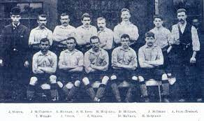
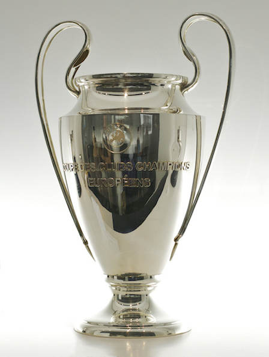

When It Was Founded
Since they were founded in 1892, the Liverpool Football Club name was synonymous with fame and glory. Internationally, Liverpool is the most successful British club of all time with plenty of European trophies on their record. They are one of the most popular football teams in the world, with over 200 supporter clubs in at least 50 different countries.
How Many trophies Did Liverpool Win?
Liverpool Football Club are England's most successful football team and also one of Europe's most decorated clubs. We have won 50 major club honours and a total of 66 including the Charity/Community Shield. Liverpool have won 14 honours through UEFA and FIFA, with the rest coming from the English domestic game.